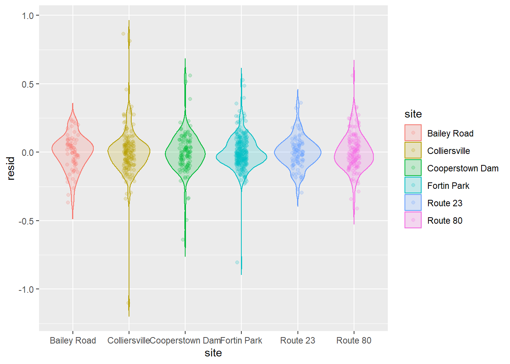

16.4 Non-metric multidimensional scaling
Overview
Non-metric multidimensional scaling (NMDS) is very similar in nature to PCA, but can be considerabbly more flexible. Whereas PCA relies primarily on the assumption of linearity to do ordination, NMDS makes no such assumption, working rather on ranks, and as a result can take a variety of data for analyses. For example, because of the ability to use similarity matrices other than the Euclidean distance matrix used in PCA, NMDS allows us to better handle non-normal data, but also things like missing and null data (which PCA cannot handle).
16.4.1 Worked example front end adapted from Jon Lefcheck
Let’s have a look at an example that uses some simulated community data to show how we run the analyses, do some data visualization, and interpret the results.
# install.packages('vegan') # Uncomment to install
library(vegan)
# Let's start by simulating some data that we can use for this example
# Set the seed for reproducibility
set.seed(2)
# Now, simulate the data. We tell R to turn the data into a matrix right up
# front
community_matrix = matrix(
# Take 300 samples between 1 and 100, with replacement
sample(1:100, 300, replace=T),
# Tell R that we want the matrix we are making to have 10 rows, so
# it will have 30 columns by default
nrow=10,
# We will call the rows community 1 through 10 and the columns will be
# species 1 through 30
dimnames=list(paste("community", 1:10, sep=""), paste("sp", 1:30, sep=""))
)
# We define two treatments, separately from the matrix to which we will
# assign the communities.
treat=c(rep("Treatment1",5),rep("Treatment2",5))Now, we will fit the NMDS using the metaMDS function in the vegan package
# Fit the NMDS
example_NMDS=metaMDS(
community_matrix, # Community-by-species matrix
k=2 # The number of reduced dimensions we want to use
)## Square root transformation
## Wisconsin double standardization
## Run 0 stress 0.1486476
## Run 1 stress 0.1913739
## Run 2 stress 0.1908305
## Run 3 stress 0.1908317
## Run 4 stress 0.1849162
## Run 5 stress 0.1906937
## Run 6 stress 0.1486489
## ... Procrustes: rmse 0.0007687706 max resid 0.001221702
## ... Similar to previous best
## Run 7 stress 0.1849759
## Run 8 stress 0.1688829
## Run 9 stress 0.1650751
## Run 10 stress 0.1486477
## ... Procrustes: rmse 0.000106901 max resid 0.0001907307
## ... Similar to previous best
## Run 11 stress 0.164544
## Run 12 stress 0.3153591
## Run 13 stress 0.219889
## Run 14 stress 0.2237401
## Run 15 stress 0.1699875
## Run 16 stress 0.1650804
## Run 17 stress 0.1906937
## Run 18 stress 0.2255724
## Run 19 stress 0.1494912
## Run 20 stress 0.1650751
## *** Solution reached##
## Call:
## metaMDS(comm = community_matrix, k = 2)
##
## global Multidimensional Scaling using monoMDS
##
## Data: wisconsin(sqrt(community_matrix))
## Distance: bray
##
## Dimensions: 2
## Stress: 0.1486476
## Stress type 1, weak ties
## Two convergent solutions found after 20 tries
## Scaling: centring, PC rotation, halfchange scaling
## Species: expanded scores based on 'wisconsin(sqrt(community_matrix))'
Now we can plot the ordination for our NMDS given that we are satisfied with the stress parameter and the convergence
# First, make a blank plot of the nmds
ordiplot(example_NMDS, type="n")
# Now, we can add some ellipses to show
# the grouping indicated by nmds
ordiellipse(example_NMDS,
groups=treat,
draw="polygon",
col="grey90",
label=F)
# Add the raw species data. Note that no
# matter what the columns actually represent,
# you will always use `species` for these
# plots because that is what these tools
# were originally designed for.
orditorp(example_NMDS,
display="species",
col="red",
air=0.01
)
# Next, add the `communities` to the plot.
# Same as above, these will always be called
# `sites` even if that isn't what your rows
# represent. It is just a convention based
# on the purpose for which the tools were built.
orditorp(example_NMDS,
display="sites",
col=c(rep("green", 5),
rep("blue", 5)
),
air=0.01,cex=1.25
)That looks pretty good, but we need to do some actual statistics if we want to draw inferences about how the species in this community tend to cluster together.
To do this, we will use analysis of similarities (ANOSIM) to determine whether the dissimilarities between groups is greater than the dissimilarities between species within the groups. In order to do this, we need to provide two things:
- We need to give R a data matrix, which can be
- the matrix or data frame that we started with, or
- a dissimilarity matrix
- We need to tell R what the grouping variable is, in this case it is treat
Let’s take a look at the dissimilarity matrix, just so we have an idea what we are dealing with here:
## community1 community2 community3 community4 community5 community6
## community2 0.3483221
## community3 0.3750885 0.3485503
## community4 0.3984662 0.2491947 0.2946949
## community5 0.3689126 0.3227885 0.3779141 0.3003204
## community6 0.3700845 0.3426841 0.2779081 0.2534854 0.3521395
## community7 0.4548094 0.3749606 0.3735499 0.3429467 0.3609282 0.3681319
## community8 0.3990185 0.3141925 0.3967709 0.2600519 0.3811223 0.3257306
## community9 0.3236486 0.1972749 0.2563625 0.2011782 0.2634060 0.2948348
## community10 0.3968727 0.4087685 0.3215739 0.3412368 0.3487179 0.3717904
## community7 community8 community9
## community2
## community3
## community4
## community5
## community6
## community7
## community8 0.3816901
## community9 0.3684545 0.2965517
## community10 0.4681960 0.3987730 0.2472421This matrix gives a measure of distance between any two communities in the data with respect to the species that those communities contain. If we use ANOSIM to test for differences between treatment1 and treatment2, what we are really testing is the null hypothesis that the dissimilarity between communities in different treatments is less than or equal to the dissimilarity between communities in the same treatments. If we reject this null hypothesis, then the alternative is that communities exposed to the different treatments are more different from one another than communities that are exposed to the same treatment.
##
## Call:
## anosim(x = vegdist(community_matrix), grouping = treat)
## Dissimilarity: bray
##
## ANOSIM statistic R: -0.076
## Significance: 0.753
##
## Permutation: free
## Number of permutations: 999
##
## Upper quantiles of permutations (null model):
## 90% 95% 97.5% 99%
## 0.140 0.172 0.196 0.232
##
## Dissimilarity ranks between and within classes:
## 0% 25% 50% 75% 100% N
## Between 1 9.00 21.0 33.00 44 25
## Treatment1 4 13.75 22.5 32.75 40 10
## Treatment2 3 13.50 27.5 35.50 45 10Here, we see that the dissimilarity between classes is greater than the dissimilarity within classes (p = 0.753), so we reject the null hypothesis. Do be careful to understand that the ANOSIM statistic R is not the same as the correlation coefficient r.
To quote the R documentation:
"If two groups of sampling units are really different in their species composition, then compositional dissimilarities between the groups ought to be greater than those within the groups. The anosim statistic R is based on the difference of mean ranks between groups (rB) and within groups (rW):
\[R = \frac{(r_B - r_W)}{\frac{N \times (N - 1 )}{4}}\]
The divisor is chosen so that R will be in the interval -1 … 1, with a value of 0 indicating completely random grouping.
The statistical significance of observed R is assessed by permuting the grouping vector to obtain the empirical distribution of R under null-model. See permutations for additional details on permutation tests in vegan. The distribution of simulated values can be inspected with the permustats function."